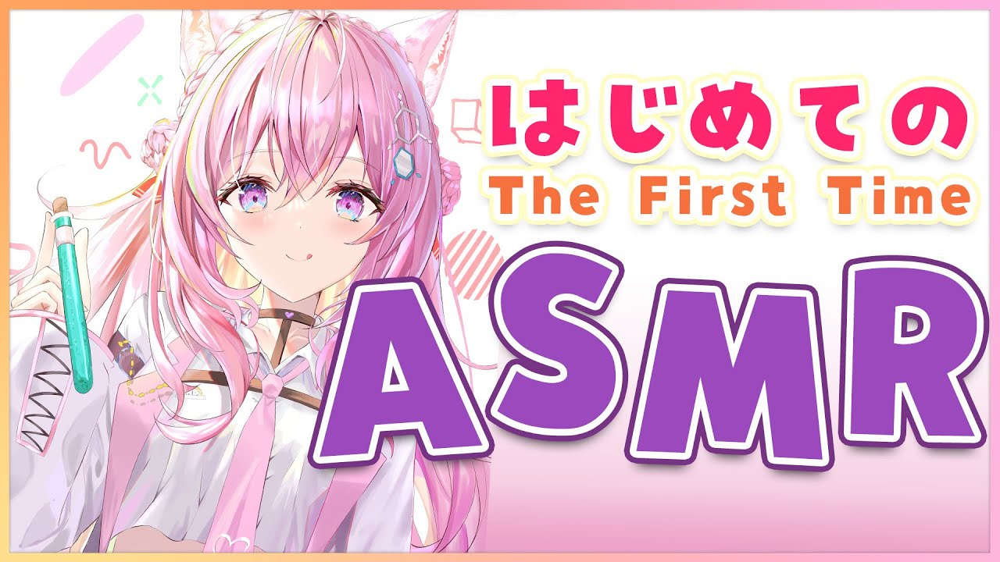
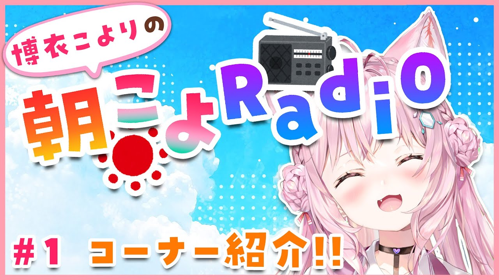

博衣小夜璃（博衣 こより／Hakui Koyori），是一名於2021年11月26日開始活動的VTuber。
所屬日本團體Hololive
『秘密結社holoX』的研究家。
《秘密結社holoX》的研究家。
一面照顧著結社成員、一面進行人類觀察。
熱心研究、好奇心旺盛，有時會為了觀察他人反應而惡作劇。
自稱是「holoX的大腦」，但實際上她的知識是有所偏差的。
「『ずのー！』是她的口號，是一位頭腦派（？）的研究者。每天進行兩次、甚至三次直播是家常便飯，還曾經『不知不覺間直播了21小時，但體感只有8小時』，堪稱JP最強的直播怪物。
此外，她也是個喜歡女孩子、容易不小心越線的**‘頭腦粉紅’**小狼（コヨーテ）。她的ASMR與歌聲既可愛又帶點敏感氛圍，平時說話相當有禮貌，但在遊戲直播中，遇到恐怖遊戲或意外死亡時，會發出驚叫，甚至拍桌子，繼承了這類激情主播的傳統。
雖然個性充滿宅氣，但她確實是一名理科女生，頭腦是真的很好。根據助手的統計，她的直播時數在2022年約為1800小時，2023年則達到2000小時。
她的主要活動包括Hololive新聞節目《朝こよ》、24小時直播大型企劃《こんこよ24》、以及各類遊戲實況等。」
| 博衣小夜璃（博衣こより） | ||
|---|---|---|
 |
||
| 別名 | 博士、郊狼 | |
| 粉絲名 | 小夜璃的助手君
|
|
| 相關連結 |
Hololive官方網站
YouTube.HakuiKoyori Twitter.HakuiKoyori |
|
| #hashtag |
#こより実験中：直播相關用 #こよりすけっち：粉絲繪圖 #朝こよ台詞：台詞大賞中想念的台詞 #AsaKoyoLines：台詞大賞中想念的台詞（英文版） #朝こよリーク：關於Hololive成員的情報新聞 #こよこよ動画：剪輯影片 |
|
| 種族 | 郊狼 | |
| 身高 | 153cm | |
| 耳朵數量 | 4個 | |
| 生日 | 3月15日 | |
| 出道日 | 2021年11月28日 | |
| 人物相關 | ||
| 繪師(媽媽) | ももこ | |
| Live2D | rariemonn | |
| 3D模型師 | 八剣 | |
| 同期生 | 拉普拉斯·暗黑、鷹嶺琉依、 沙花叉克蘿伊、風真伊呂波 |
|
|  |
| 第一次的ASMR |
|  |
| 初次的朝Koyo |